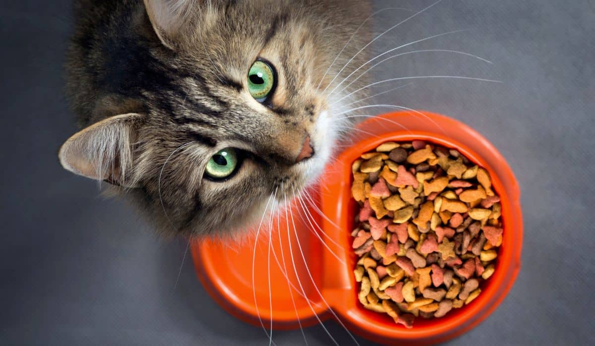
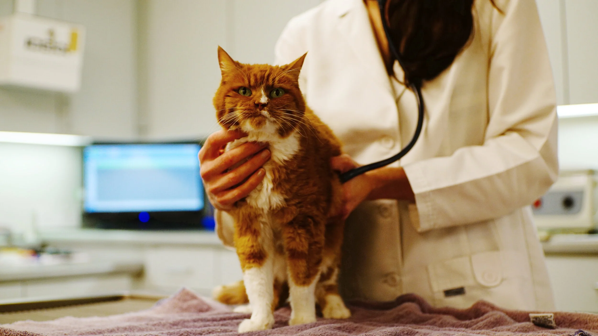
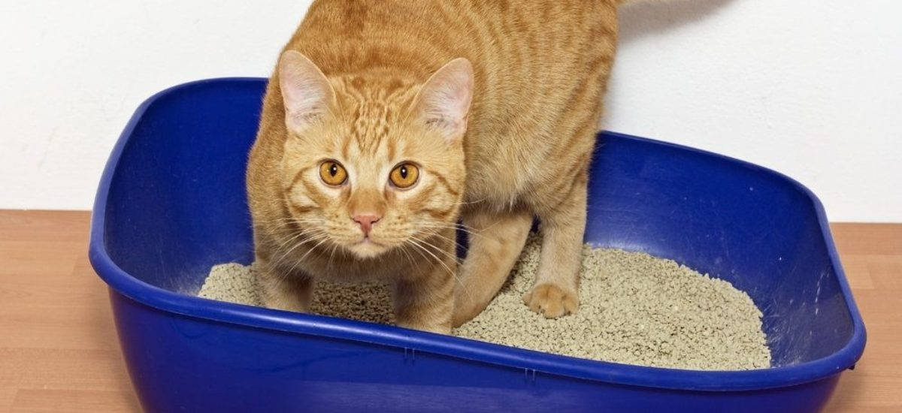
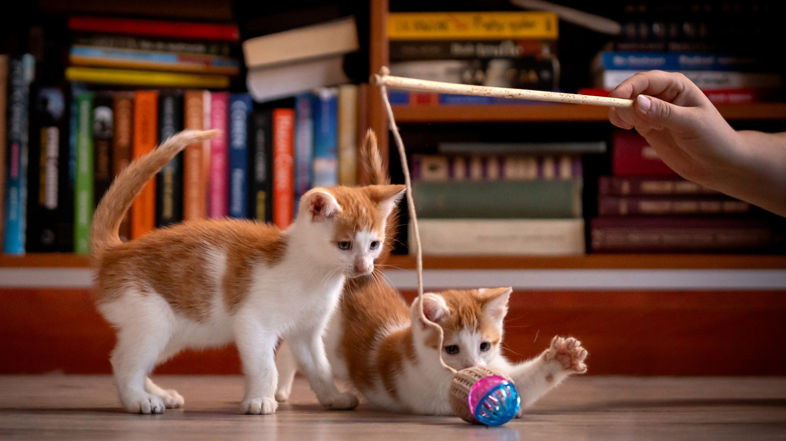

Cuidar a un gato implica más que solo alimentarlo. Es importante atender
sus necesidades físicas, emocionales y de salud para asegurar una vida
larga y feliz.
Los gatos pueden parecer independientes, pero requieren atención
constante, un ambiente limpio y estimulación para evitar el estrés o el
aburrimiento.
Un buen cuidado garantiza que tu gato se mantenga
sano, activo y con una buena calidad de vida.

Es fundamental proporcionar comida de calidad rica en proteínas. Evita dar alimentos humanos que puedan ser dañinos.

Las visitas al veterinario son necesarias para vacunas, revisiones y prevención de enfermedades comunes.

Mantén limpia su caja de arena y su espacio. Esto evita enfermedades y mejora su bienestar.

Los gatos necesitan jugar y moverse. Los juguetes ayudan a mantenerlos activos y mentalmente estimulados.
Siempre debe tener agua limpia disponible.
Evita objetos peligrosos y crea un ambiente cómodo.
Dedica tiempo a convivir con tu gato diariamente.